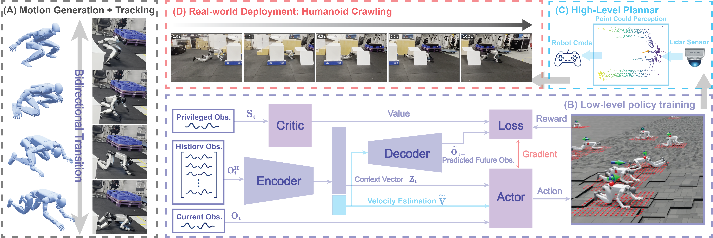

Abstract
Humanoid locomotion in confined spaces requires continuous height adaptation across multiple locomotion modes, yet most existing approaches remain limited to height-adjustable bipedal walking. We present REACH, an RL-based hierarchical framework that enables a Unitree G1 humanoid to traverse height-constrained environments through variable-height bipedal walking and quadrupedal crawling. The learned policies regulate body height over complementary command ranges of 1.27–0.50 m in bipedal locomotion and 0.50–0.20 m in crawling, extending traversal beyond the clearance limits of crouched walking. To address contact-rich crawling dynamics, we employ a history-conditioned latent representation that captures terrain and interaction context from proprioceptive observations. A bidirectional transition policy further connects crouched bipedal locomotion and crawling across large kinematic and contact discontinuities. These skills are integrated with a LiDAR-based planner that converts point clouds into collision-free three-dimensional paths and locomotion commands, including proactive height targets. Simulation studies, ablations, and real-world experiments demonstrate accurate height and velocity tracking, robust terrain traversal, reliable mode transitions and confined-space traversal with the proposed pipeline.
Method
Hierarchical control for confined-space traversal: bidirectional mode transitions, history-conditioned latent policies, and LiDAR-driven planning.

Demos
Real-world deployments on the Unitree G1 across whole-trajectory navigation, variable-height walking, crawling, and scalable confined traversal.